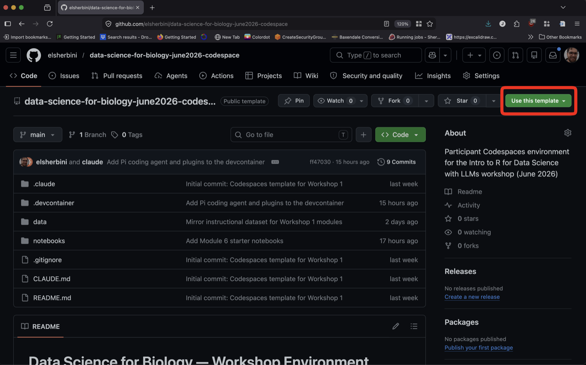
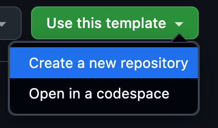
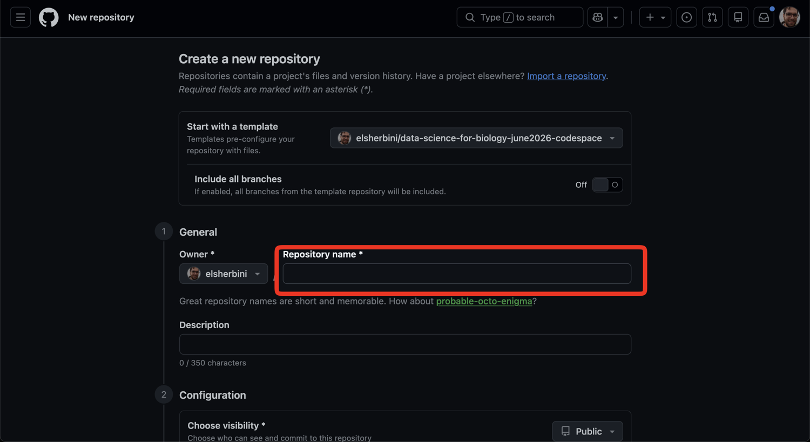
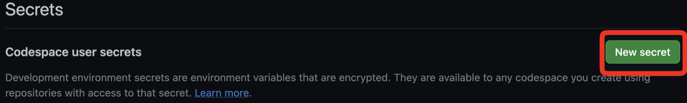
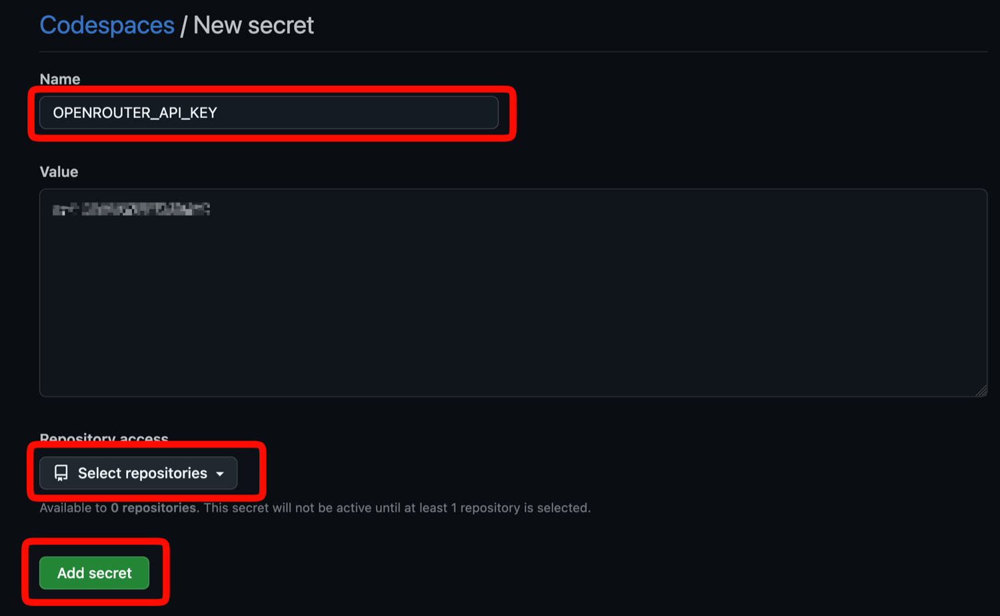
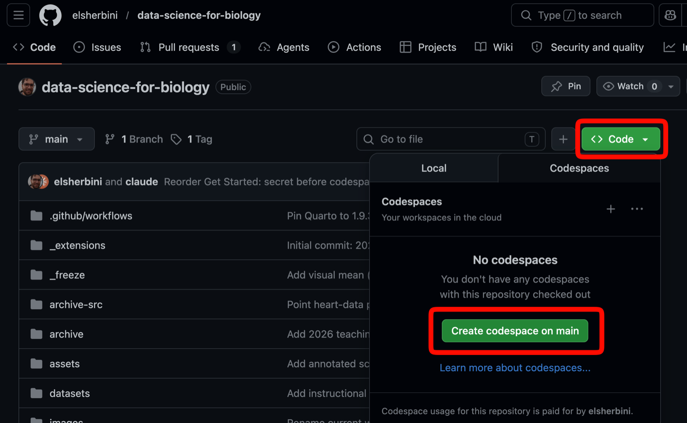
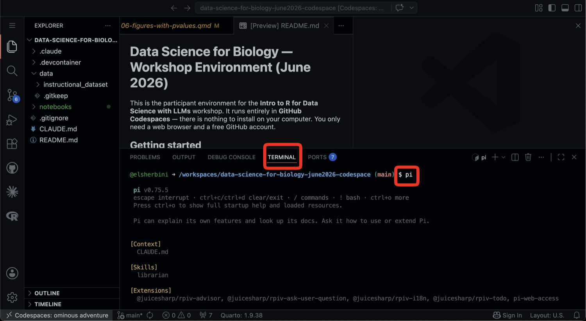

Get Started
This workshop runs entirely in the cloud using GitHub Codespaces. There is nothing to install on your laptop — you only need a web browser, a free GitHub account, and a Discord account.
Quick checklist
Five things to do before the first session:
- Get on the workshop Discord and claim your API key with
/claim - Sign in to GitHub (create a free account if you don’t have one)
- Create your copy of the workshop repo
- Add the API key as a Codespaces secret on GitHub
- Launch your codespace
Each item below walks through one of these steps in detail. You can also step through the slides one at a time.
Instructions in slide form (long form below)
The order matters: claim your key in Discord, create your repo, add the key as a Codespaces secret targeting that repo, then launch the codespace. A codespace launched before the secret is in place won’t see the key until you restart it.
1. Claim your OpenRouter API key in Discord
Workshop API keys are handed out by a bot in our Discord server.
Join the server
Open the workshop Discord invite and accept it.
Get the Participant role
Ask a TA or an instructor (in the server or in person) to give you the Participant role. The bot only hands out keys to people who have it.
Run /claim
In any channel, type /claim and press Enter. The bot replies right in the channel, but its message is visible only to you. The reply contains your personal OpenRouter API key and your daily budget. Copy the key now — you’ll paste it into GitHub in step 4.
Two other commands you may want later:
/key— show your key again if you lose track of it/usage— see how much of today’s budget you’ve used (it resets at midnight UTC)
2. Sign in to GitHub
Before you create your repo or click any buttons on GitHub, make sure you are signed in. Go to github.com/login and sign in, or create a free account if you don’t have one yet.
This matters because GitHub hides the “Use this template” and “Code” buttons from signed-out visitors — if you’re not logged in, the next steps simply won’t show the buttons described below.
3. Create your own copy of the workshop environment
The workshop environment lives in a template repository. You’ll start by making your own copy of it.
Open the template
Open the participant environment repo on GitHub and click the green “Use this template” button near the top right.

Create a new repository
In the dropdown, choose “Create a new repository”.

Name it
Give the repository a name (for example, workshop-2026) and click the green “Create repository” button at the bottom of the form. The owner can stay as your username.

4. Add your OpenRouter API key as a Codespaces secret
Store the key from step 1 as a Codespaces secret before you launch your codespace — that way the codespace has the key from the moment it boots.
Open your Codespaces settings
Go directly to your Codespaces settings page.
Click “New secret”
Scroll to “Codespace user secrets” and click “New secret”.

Fill in and save the secret
In the form:
- Name:
OPENROUTER_API_KEY(exact spelling, all caps) - Value: paste the API key the Discord bot gave you in step 1
- Repository access: click “Select repositories” and choose the repository you created in step 3
Then click “Add secret” at the bottom.

5. Launch a codespace
Go back to your new repository’s page. Click the green “Code” button, switch to the “Codespaces” tab, and click “Create codespace on main”.

The first build takes around 10 minutes or more — GitHub is provisioning a container and installing R, Quarto, the workshop’s R packages, and the Pi coding agent. After this first build, reopening the codespace is fast.
6. Open a notebook
Once the codespace has finished building:
- Use the file explorer on the left to find the starter Quarto notebooks (files ending in
.qmd). - Open one to start working. You can edit text and code cells directly in the browser.
7. Meet Pi in the terminal
Your codespace includes Pi, an AI coding assistant, in the integrated terminal. We will use Pi for the first couple of days; later in the workshop we will switch to Claude Code.
- Open the integrated terminal (Terminal → New Terminal, or use the keyboard shortcut).
- Start Pi by typing
piand pressing Enter. - Ask it questions in plain language — it can read your notebook, explain code, and help you make changes.

You are now ready to begin the workshop. If you get stuck, ask an instructor or a teaching assistant.